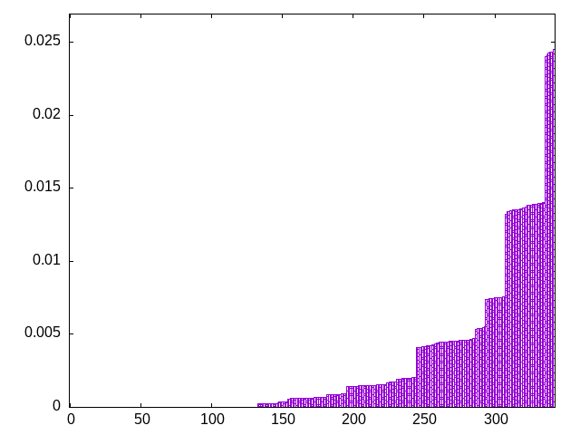
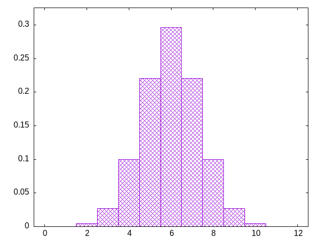

start with a fixed sequence, and shift the pieces randomly
ljiotszjitlsojzltiosjzlitsojzilsotzljisotzjiltsojzlitszoijlstojztilszojtislozjitlsjozlistozjtsilzjoioltsjziltsoztjilozsljitsjiozlsotijzoltszjlsitjozitloszitjlsozjilstzojilstojztilosjzlitsozjiltsozjlitsozjiltozsijlstozjlistojzlitsjoiztlsozljtisozjilstojzitlsjoizlstzoijltoszjlitszoijsltozjisoltzjisltzojiltszjoiltsojziltsozjiltozsjiltsozijtlosziljtsjoztilzsoijlsotjziltosjzlisotzjisltojzlistojzlistzoljitsojziltosjziltsozlijsotijztlszojitlozsjiltszojlitosjizltzosjitlzsoiljstoziljtsojziltozsjiltsozljtsiozijtlsozijltsozitjlsoizjtlsozjilsotizjltzosjiltzsojlitszojitlszojiltsozjltioszijltsoiztjlozsjitslozijtloszjitlosjzlistjoiztloszjiltoszjiltoszjitslojzitlsozijltsoiztjlsoizjlstojiztslozijltoszjilotszjltioslzjitjsoiztlsozjitlosjzlitsozjtlisozjlitsozjitlsozltjiszojlitsoziljstojzitslzojlitzsojliostjzitlsojizltoszjltisozjlitsoizjtlsozjlitszojilsztojlitoszljitosziljtsojzlitszoiljtszjoiltsozjiltsjozltisozjtiloszjtilsojziltsozijsltzoijtlszojiltszjotsiolzjlistzojilstozjiltoszjiltosjzitlozsjtislojziltso
bagginess: 0.4902
bagginess6: 0.9902
distribution1_maxgap: 1.000000000001e-06
distribution2_maxgap: 0.01221901221901222
distribution3_maxgap: 0.01021202042404085
distribution4_maxgap: 0.00613001839005517
diversity: 6.5
entropy: 7.316
evenness_diff: 9.927
evenness_same: 0.434
maxdrought: 11.7
maxflood: 2
peakdrought: 6.0
repchance: 0.0000
seq4_coverage: 0.4444
seq4_follow: 9.206
distribution3_graph:

drought_graph:

similarity: (lower is more similar)
| 1.135 | ti |
| 1.261 | seamless_bag_pure |
| 1.293 | tgm_tap |
| 1.301 | weight_exp_pure |
| 1.376 | weight_exp |
| 1.390 | tgm_tap_pure |
| 1.400 | deepbag_fixed4 |
| 1.503 | shift3_5 |
| 1.512 | tgm_pure |
| 1.520 | bag |
| 1.527 | tgm |
| 1.544 | bag_pure |
| 1.814 | weight |
| 1.966 | balanced5 |
| 2.021 | deepbag_fixed7 |
| 2.095 | weight2 |
| 2.096 | weight_lin_pure |
| 2.172 | seamless_deep_pure |
| 2.179 | wet2 |
| 2.248 | wet3_size12 |
| 2.273 | deepbag_window4 |
| 2.445 | shift7 |
| 2.505 | bag2 |
| 2.568 | seamless_bag2_pure |
| 2.576 | deepbag_fixed10 |
| 2.722 | wet_pure |
| 2.741 | deepbag_window7 |
| 2.787 | seamless_bag3_pure |
| 2.817 | balanced7 |
| 2.854 | nes_pure |
| 2.906 | bag3 |
| 2.928 | shift10_5 |
| 2.939 | wet |
| 2.945 | nes |
| 2.965 | deepbag_window10 |
| 3.039 | shift21 |
| 3.061 | balanced9 |
| 3.074 | bag4 |
| 3.129 | shift14 |
| 3.141 | balanced_long_add_pure |
| 3.241 | balanced_long_mul_pure |
| 3.325 | wet3 |
| 3.414 | wet2_size100 |
| 3.568 | flatbag |
| 3.568 | flatbag_pure |
| 3.606 | fullrandom |
| 3.653 | fullrandom_pure |
| 5.788 | repeat_recent_pure |
| 7.556 | repeat_last_pure |